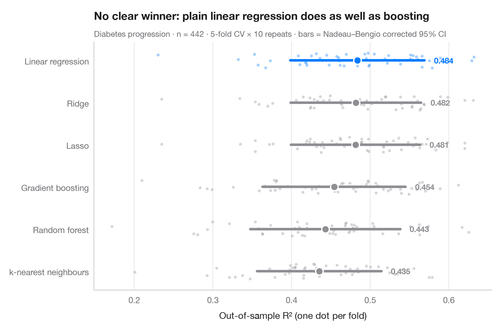

交差検証によるモデル比較
複数モデルの分割ごとのスコアを、平均値と補正済み 95% 区間とともに示します。

「モデル B は 0.47、モデル A は 0.46」と言っても、分割ごとにスコアがどれだけ変わるかが分からなければ意味がありません。ここでは各モデルを 同じ 10 × 5 の反復分割で評価します。各点がひとつの分割、大きなマーカーが平均、バーがその 95% 区間です。分割ごとのスコアは独立ではありません（訓練データが重なるため）。そこで区間には、狭すぎる素朴な標準誤差ではなく、Nadeau–Bengio の補正 分散を用いています。
データは scikit-learn 付属の糖尿病患者 442 人（load_diabetes）で、目的変数は 1 年後の病状進行の指標、スコアは標本外 R² です。スコアは RepeatedKFold を用いた cross_val_score により、線形モデルは Pipeline の中で標準化しています。
コードおよび図中のテキストは英語です。
import matplotlib.pyplot as plt
import numpy as np
from scipy import stats
from sklearn.datasets import load_diabetes
from sklearn.ensemble import GradientBoostingRegressor, RandomForestRegressor
from sklearn.linear_model import LassoCV, LinearRegression, RidgeCV
from sklearn.model_selection import RepeatedKFold, cross_val_score
from sklearn.neighbors import KNeighborsRegressor
from sklearn.pipeline import make_pipeline
from sklearn.preprocessing import StandardScaler
X, y = load_diabetes(return_X_y=True)
k, reps = 5, 10
cv = RepeatedKFold(n_splits=k, n_repeats=reps, random_state=0)
models = {
"Linear regression": make_pipeline(StandardScaler(), LinearRegression()),
"Ridge": make_pipeline(StandardScaler(), RidgeCV(alphas=np.logspace(-3, 3, 25))),
"Lasso": make_pipeline(StandardScaler(), LassoCV(random_state=0)),
"Random forest": RandomForestRegressor(n_estimators=300, min_samples_leaf=5, random_state=0),
"Gradient boosting": GradientBoostingRegressor(learning_rate=0.05, max_depth=2, random_state=0),
"k-nearest neighbours": make_pipeline(StandardScaler(), KNeighborsRegressor(n_neighbors=15)),
}
scores = {name: cross_val_score(m, X, y, cv=cv, scoring="r2", n_jobs=-1) for name, m in models.items()}
# Nadeau–Bengio corrected 95% interval for a mean of k-fold scores
def corrected_ci(s):
J = len(s)
se = np.sqrt((1 / J + (1 / k) / (1 - 1 / k)) * s.var(ddof=1))
t = stats.t.ppf(0.975, J - 1)
return s.mean() - t * se, s.mean() + t * se
order = sorted(scores, key=lambda n: scores[n].mean())
best = order[-1]
fig, ax = plt.subplots(figsize=(8, 5.2))
rng = np.random.default_rng(3)
for i, name in enumerate(order):
s = scores[name]
c = "#007AFF" if name == best else "#8E8E93"
ax.scatter(s, i + rng.uniform(-0.18, 0.18, len(s)), s=12, color=c, alpha=0.35, lw=0)
lo, hi = corrected_ci(s)
ax.plot([lo, hi], [i, i], color=c, lw=3, solid_capstyle="round")
ax.scatter(s.mean(), i, s=80, color=c, edgecolor="white", lw=1.5, zorder=4)
ax.text(hi + 0.012, i, f"{s.mean():.3f}", va="center", fontsize=9.5, color=c, fontweight="semibold")
ax.set_yticks(range(len(order)), order)
ax.set_xlabel("Out-of-sample R² (one dot per fold)")
ax.grid(axis="x"); ax.grid(axis="y", visible=False)
ax.set_title("No clear winner: plain linear regression does as well as boosting", pad=26)
ax.text(0, 1.02, f"Diabetes progression · n = {len(y)} · {k}-fold CV × {reps} repeats · "
"bars = Nadeau–Bengio corrected 95% CI", transform=ax.transAxes, fontsize=9.5, color="#6E6E73")
plt.show()
図にはオプションの PyStatlas スタイル を使用しています。同じ見た目にするには plt.style.use("pystatlas.mplstyle") を追加してください。
引用方法
PyStatlas は Thierry Warin が作成・運営しています。研究や業務に役立った場合は、ぜひ引用してください。
Warin, T. (2026). Cross-validated model comparison. In PyStatlas: The Python Gallery of Statistical Graphics. https://warint.github.io/pystatlas/machine-learning/model-comparison/
@misc{warin2026statlas,
author = {Warin, Thierry},
title = {PyStatlas: The Python Gallery of Statistical Graphics},
year = {2026},
howpublished = {\url{https://warint.github.io/pystatlas/}},
note = {Source code: https://github.com/warint/pystatlas}
}